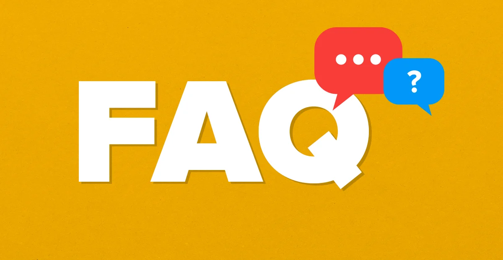

FAQ's
Find answers to some of the most common questions about cybersecurity and online safety.

What is cybersecurity?
Cybersecurity is the practice of protecting computers, networks, and data from online attacks, theft, and damage.
How can I create a strong password?
Use at least 12 characters with uppercase letters, lowercase letters, numbers, and symbols. Avoid using personal information.
What is phishing?
Phishing is a scam where attackers trick people into sharing personal information through fake emails, messages, or websites.
Why is two-factor authentication important?
Two-factor authentication adds an extra layer of security by requiring a second step to verify your identity.
How do I stay safe on public Wi-Fi?
Avoid accessing sensitive information on public Wi-Fi. Use trusted websites and make sure the website uses HTTPS.
What should I do if I suspect a cyber attack?
Change your passwords, run a security scan, and contact your service provider or IT support if needed.